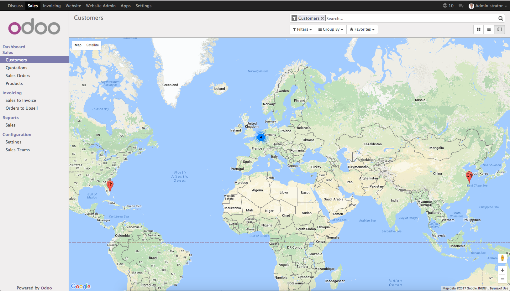

<section class="oe_container">
    <div class="oe_row oe_spaced">
        <h2 class="oe_slogan" style="color:#875A7B;">Brings Google Maps features into Odoo Web</h2>
        <h4 class="oe_slogan">Show all your partners location on google maps</h4>
        <div class="oe_span12">
            <div class="oe_demo oe_picture oe_screenshot">
                
            </div>
        </div>
    </div>
</section>
<section class="oe_container">
    <div class="oe_row oe_spaced">
        <div class="oe_span12">
            <p>This module brings two features:</p>
            <ul>
                <li>Allows user to view all partners addresses on google maps.</li>
                <li>
                    Enabled <q>Google places autocomplete address form</q> into partner form view,<br/>
                    provide autocomplete feature when you typed an address of partner
                </li>
            </ul>
        </div>
    </div>
</section>
